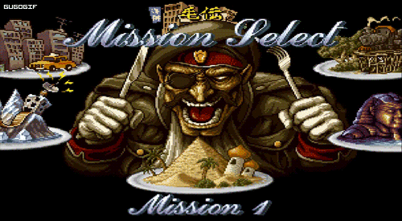
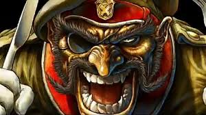
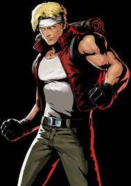
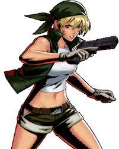
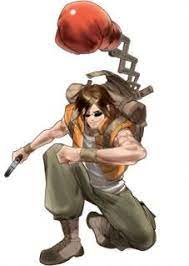

Han transcurrido casi dos años desde el final de la Primera Guerra Moderna. El golpe de estado del General Morden llevó al mundo al borde de la destrucción total, del caos más absoluto. Sin embargo, gracias al liderazgo de dos valerosos soldados, se pudo frenar la revuelta con una contraofensiva contundente por parte de las Fuerzas del Gobierno. Pero la victoria tuvo sus consecuencias para los Peregrine Falcons, y es que tras esa dura batalla sus fuerzas quedaron seriamente mermadas, con lo cual comenzaba ahora una dura etapa en la que debían reunir de nuevo suficientes efectivos como para poder volver a ser el escuadrón que una vez fue.
Un día, Marco y Tarma son requeridos por parte de la oficina del Estado Mayor de las Fuerzas del Gobierno. Al acudir allí y escuchar lo que sus camaradas tenían que decirles, sus peores temores se hacen realidad: las fuerzas del General Morden se están reagrupando, y lejos de desaparecer o huir, muestran signos de estar reabasteciéndose, preparándose quizás para una nueva ofensiva. Los motivos de esa nueva amenaza tienen que ver con el descontento de la gente hacia la clase política. El levantamiento de Morden fue claramente un gesto encaminado a erradicar esa corrupción reinante entre los políticos más poderosos, e hizo mella entre los diferentes países y sus ejércitos.
Esta nueva amenaza podría llegar a ser preocupante, máxime si se tiene en cuenta lo numerosos que son estos nuevos simpatizantes. Aunque a pequeña escala, no han dejado de haber pequeños levantamientos y rebeliones por todo el planeta. En un principio, la falta de organización ha impedido que esta situación empeore. Pero el problema - dicen las autoridades a Tarma y a Marco - es que una vez hecho el estudio a nivel mundial, observando cada uno de los pequeños conatos de resistencia, llama la atención que parece que siguen un cierto patrón común. Lo que en principio era efectivamente unas escaramuzas puntuales, ahora tienen un cierto componente estratégico, como si alguien estuviera coordinando todos esos ataques, como si siguieran un fin concreto. Y solo hay una persona en el mundo capaz de controlar y coordinar a todas esas fuerzas con un liderazgo sólido, ¡el General Morden!
 Lo que no logran entender los responsables de inteligencia militar, es que a pesar de que ya han pasado dos años desde ese golpe de estado fallido, ¿cómo puede ser que su líder haya podido organizar lo que puede ser el inicio de un nuevo golpe de estado, en un periodo de tiempo tan corto? A pesar de ser quien es, necesitaría más años para poder organizarlo de nuevo.
Tarma y Marco no daban crédito. ¿realmente seguían vivo? ¿cómo pudo sobrevivir? ¿cómo ha sido posible esa reorganización de sus fuerzas tan rápida? Esa y otras preguntas pasaban por sus mentes, temerosos de tener ante ellos una amenaza tan grande como lo fue la anterior revuelta.
Pero nuestros héroes no iban a ignorar sus responsabilidades, de modo que sin pensárselo dos veces aceptan una nueva misión. Esta misión tendrá como objetivo eliminar el problema de raíz, acabar de una vez por todas con el malvado General. Para ello, el escuadrón de las fuerzas especiales los Peregrine Falcons deberán hacer uso de todas sus habilidades para frenar esta oleada de movimientos insurgentes, aplastando toda oposición que encuentren en su camino. En suma, lo más importante será el factor sorpresa, y es precisamente este punto el que se protocoliza con mayor énfasis. Es tal la importancia, que incluso ninguno de los superiores de Tarma o Marco dispondrán de los detalles completos de la operación, sino que cada autoridad militar conocerá únicamente unos datos concretos concernientes a una parte de dicha misión. Porque el riesgo es doble, ya que por un lado, las fuerzas del General Morden no deben enterarse de este ataque, y por otro lado hay que impedir que las propias Fuerzas del Gobierno sepan que el malvado líder sigue vivo, ya que existe una clara posibilidad de que sólo con mencionar su nombre, los soldados salgan despavoridos, desertando y por tanto disminuyendo la capacidad táctica del ejército.
Esta misión seguramente será más dura que la anterior guerra, conocida como la Primera Guerra Moderna, pero aún así, nuestros dos protagonistas aceptan sin dudarlo. Si el malvado general sigue vivo, no va a ser por mucho tiempo. La batalla está servida.
Sin embargo, no estarán solos en el campo de batalla. Esta vez, los Peregrine Falcons cuentan con otro grupo de valientes soldados, el escuadrón de la Agencia de Inteligencia de Operaciones Especiales, los S.P.A.R.R.O.W.S. Tarma y Marco no estaban de acuerdo en enviar una fuerza de ataque conjunta, pero el mando no iba a negociar ningún aspecto de la misión. Simplemente se les explicó que esta planificación formaba parte de un plan de la Agencia de Inteligencia, cuyos motivos quedaban en el más estricto de los secretos y que por tanto, ellos no tenían por qué saber nada más.
Los generales encargados de comunicarles la misión insistieron en que debían entender la gravedad del asunto, sin importar sus opiniones. Que a pesar de ese oscurantismo, el fin era más importante que los medios, por más que las explicaciones fueran vagas. Así pues, tras aceptar, el día de la misión llega. Y se unen a ellos dos agentes de los S.P.A.R.R.O.W.S., dos jóvenes chicas llamadas Eri y Fio.
| FIO | |
| MARCO |  | ERI |  |
| TARMA |  |
Y así es como daba comienzo la misión para acabar con el golpe de estado. ¿Podrían vencer a las fuerzas del General Morden? ¿Realmente seguía vivo? ¿cuál es el terrible secreto del Ejército Rebelde? Eran algunas preguntas que el grupo se haría tras las líneas enemigas.
Tras varios encuentros hostiles, descubrieron con perplejidad que Morden había creado una alianza con una raza alienígena llamada Mars People, los cuales también deseaban conquistar el planeta. Sin embargo, cuando nuestros protagonistas localizan por fin la base de operaciones del general, los Mars People toman a Morden como prisionero, lo cual provoca la ruptura de la alianza con el Ejército Rebelde. Éstos, unidos con el Ejército Regular para luchar con el enemigo común que son los alienígenas, se abrirán camino entre estas hostiles criaturas con el fin de destruir su nave nodriza. La batalla es muy cruenta pero una vez que el polvo y el humo se disipa, puede verse a Morden y a su Ejército Rebelde huyendo del lugar, antes de que puedan ser arrestados.